Web Console Guide¶
Complete user guide for the mcctl-console web management interface -- a modern, full-featured dashboard for managing Docker Minecraft servers from your browser.
Overview¶
The mcctl-console is a Next.js web application that provides a graphical interface to every aspect of your Minecraft server infrastructure. Instead of running CLI commands, you can manage servers, worlds, players, backups, audit logs, and routing through an intuitive dark-themed UI with real-time updates powered by Server-Sent Events (SSE).
Default URL: http://localhost:5000
Architecture¶
mcctl-console uses a Backend-for-Frontend (BFF) proxy pattern for secure API communication:
+------------------+ +-------------------+ +---------------+
| Web Browser | ---> | mcctl-console | ---> | mcctl-api |
| (React/Query) | | (Next.js BFF) | | (Fastify) |
+------------------+ +-------------------+ +---------------+
^ |
| Session Auth +
| X-API-Key forwarding
|
React Query
(auto-refresh)
Why BFF Proxy?¶
- Security: API keys stay server-side, never exposed to the browser
- Session Management: Better Auth handles user authentication with JWT tokens
- Type Safety: Shared TypeScript interfaces between frontend and backend
- Caching: React Query provides optimistic updates and intelligent caching
Accessing the Console¶
Signing In¶
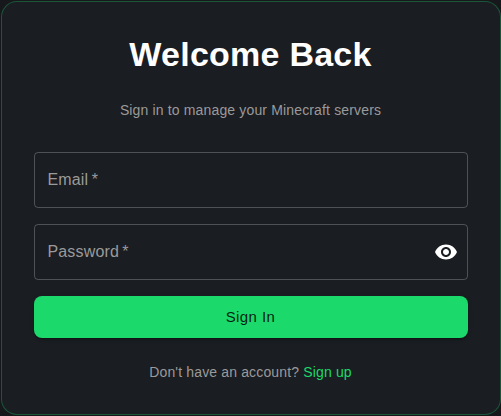
-
Start the Management Console services:
-
Open your browser and navigate to
http://localhost:5000. You are redirected to the Welcome Back sign-in page. -
Enter your credentials:
- Email: The admin email you entered during
mcctl console init - Password: The admin password (use the eye icon to show or hide it)
- Email: The admin email you entered during
-
Click Sign In. After a successful login you land on the Dashboard.
Session Persistence
A session stays valid for 7 days and is extended automatically (at most once every 24 hours) while you keep using the console. Click Logout in the user avatar menu (top-right corner) to end your session manually.
Signing Up¶
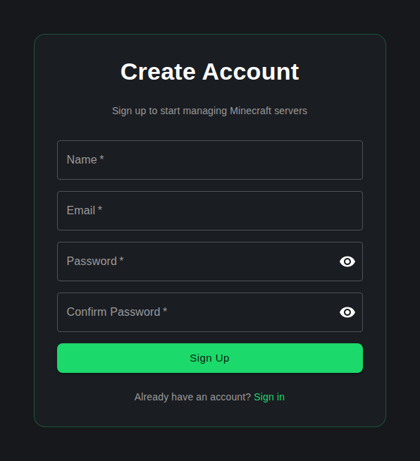
If you do not have an account yet, click Sign up under the sign-in form ("Don't have an account? Sign up") to open the Create Account page:
- Enter your Name and Email
- Choose a Password (at least 8 characters) and type it again in Confirm Password
- Click Sign Up
The account is created, you are signed in immediately, and you land on the Dashboard. Use Sign in under the form to go back to the sign-in page.
New accounts start with the User role
New accounts get the User role. A User sees only the servers that an administrator or a server Owner has granted access to (see Access Tab), so the Servers page stays empty until access is granted. A server created by a User automatically gives that User the Owner permission on it. The sign-up page does not send a verification email.
Dashboard¶
The Dashboard is your command center -- it gives you an at-a-glance overview of your entire Minecraft server infrastructure.
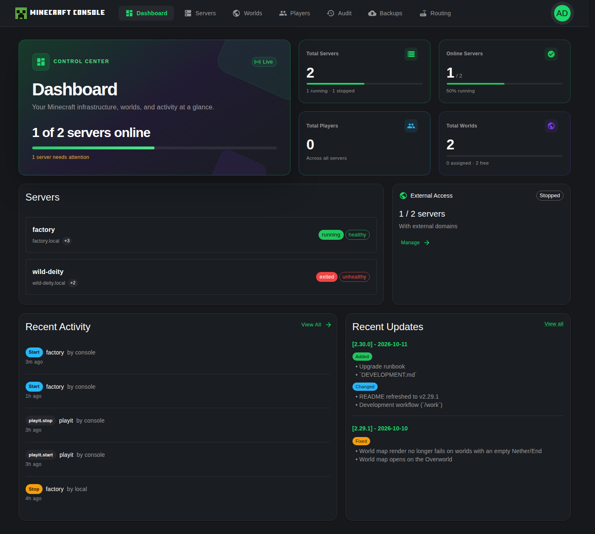
Status Hero¶
Since v2.28.0, the Dashboard opens with a status hero that summarizes platform health: how many servers are online (for example, "2 of 3 servers online" with a progress bar), how many servers need attention (not running, or unhealthy), and a Live / Reconnecting chip that reflects the real-time (SSE) connection. When server data cannot be loaded, the hero says so instead of showing zero.
Statistics Cards¶
Below the status hero, four statistics cards provide key metrics:
| Card | Description |
|---|---|
| Total Servers | The total number of configured Minecraft servers across your platform, with a running / stopped breakdown |
| Online Servers | How many servers are currently in a running state (updated in real-time via SSE) |
| Total Players | The aggregate player count across all running servers |
| Total Worlds | The total number of available worlds in your world storage, with an assigned / free breakdown |
Servers Panel¶
The left side of the Dashboard displays a Servers panel listing up to five servers with:
- Server name and hostname (e.g.,
botagent.local) - Status chip -- color-coded, such as
running,exited, orstopped - Health chip -- an outlined chip such as
healthy,unhealthy, orstarting, shown when the container reports a health state
Click on any server to navigate directly to its detail page. When you have more than five servers, a View All (N) link in the panel header opens the full Servers page.
External Access Card¶
On the right side, the External Access card shows your playit.gg tunnel status:
- How many servers have external domains configured (e.g., "1 / 3 servers")
- Current agent status (
RunningorStopped), or aNot configuredchip when playit.gg is not set up - A Manage link to navigate to the Routing page for detailed configuration
Recent Activity Feed¶
The Recent Activity feed displays the latest management actions performed on your servers, such as:
- Server start/stop events
- Backup schedule changes
- Configuration modifications
- Player management actions
Each entry shows the action type (with a color-coded badge), the target server or resource, who performed the action, and how long ago it occurred (hover to see the exact time). Failed actions carry an extra status badge. Click View All to navigate to the full Audit Log page.
Recent Updates Feed¶
The Recent Updates section shows the latest version changelog entries for the mcctl platform itself, so you can quickly see what features have been added or bugs have been fixed in recent releases.
Servers¶
The Servers page is where you manage all your Minecraft servers.
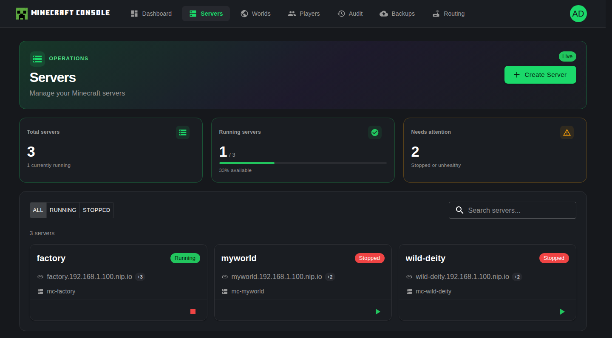
Server List¶
A summary panel at the top of the page shows a Live / Reconnecting indicator and the + Create Server button. Below it, three cards show Total servers, Running servers, and Needs attention (stopped or unhealthy servers). Then the page displays all configured servers as cards in a grid layout. Each server card shows:
- Server name (e.g.,
botagent,factory,wild-deity) - Status badge --
Running(green),Stopped(red), orCreated/Not Created - Hostname with the number of additional hostnames (e.g.,
botagent.local +2) -- click the+2chip to list all hostnames - Container name (e.g.,
mc-botagent) - Quick action button -- Start (play) for stopped servers or Stop for running servers, in the bottom-right corner
Filtering and Search¶
Above the cards, you can filter servers by status:
- ALL -- Show all servers
- RUNNING -- Show only running servers
- STOPPED -- Show only stopped servers
A Search servers... box on the right allows you to filter servers by name in real time. The number of matching servers is shown below the filters.
Creating a New Server¶
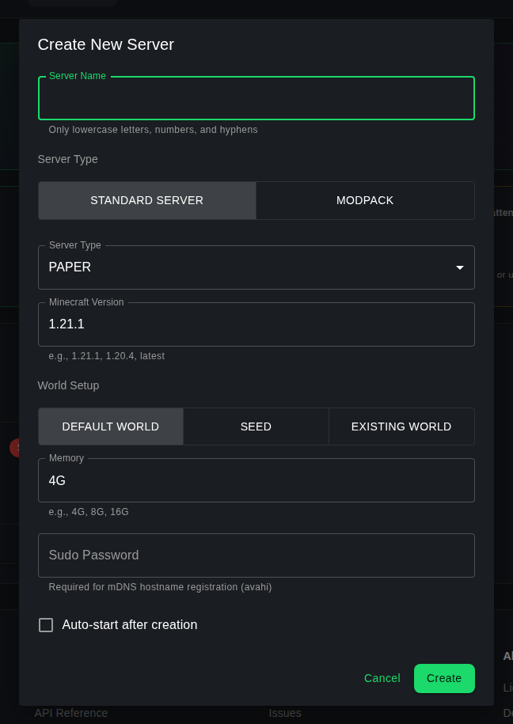
Click the + Create Server button in the page header to open the Create New Server dialog. The dialog guides you through:
- Server Name -- A unique identifier (lowercase letters, numbers, and hyphens only)
- Server Type -- Choose a category with the toggle:
- Standard Server -- Pick a Server Type (VANILLA, PAPER, FABRIC, FORGE, or NEOFORGE) and a Minecraft Version (e.g.,
1.21.1orLATEST). The defaults are VANILLA andLATEST. For other types, pin a version such as1.21.1if the loader doesn't support the newest Minecraft release yet - Modpack -- Search Modrinth modpacks by name (or type a slug such as
cobblemon), then choose a Mod Loader and a compatible Minecraft Version. Client-only mods that are detected are added to Exclude mods (optional) automatically; you can edit that comma-separated list
- Standard Server -- Pick a Server Type (VANILLA, PAPER, FABRIC, FORGE, or NEOFORGE) and a Minecraft Version (e.g.,
- World Setup -- Default World, Seed (enter a seed), or Existing World (pick an unassigned world)
- Memory -- How much RAM to assign (default
4Gfor standard servers,6Gfor modpacks) - Sudo Password -- Required for mDNS hostname registration (avahi). If you leave it empty, Create asks you to confirm: choose Continue without password when sudo on the host doesn't ask for one, or Enter password to go back to the field
- Auto-start after creation -- Start the server as soon as it is created
Click Create to start. The dialog switches to a progress view (Initializing, Creating, Configuring, Starting) driven by Server-Sent Events, and ends with Server Created Successfully or Creation Failed.
Server Detail Page¶
Click on any server card to open the detailed server management view. The detail page features:
Header Section¶
- An All servers button to go back to the list
- Server name,
Minecraft <version> · <type>, hostname, and uptime - A status badge showing the current server state, a health badge (e.g.,
Healthy,Unhealthy), and a Reconnecting badge while the real-time connection is being restored - Start for a stopped server, or Stop and Restart for a running server
- A ⋮ menu with Delete Server. The confirmation dialog requires you to type the server name, and the deletion cannot be undone. The dialog also asks what to do with the world: Keep the world (move to worlds/) is the default and moves the server's world to
worlds/(a world already inworlds/is just unassigned); Delete the world inside the server too removes the server's own world. Worlds inworlds/are never deleted. If the deletion fails (for exampleworlds/<name> already exists), nothing is deleted and the error is shown in the page
Navigation Tabs¶
The server detail page is organized into ten tabs:
| Tab | Description |
|---|---|
| Overview | Server console with live log output and RCON command input, plus server information, players, and connection details |
| Players | Online + offline player roster with management actions and a per-player detail view (v2.27.0+) |
| World | The assigned world's info, BlueMap web map, ore & block statistics, and player locations |
| Activity | Per-server audit history showing all actions performed on this server |
| Mods | Mod management -- search, install, and remove mods from Modrinth |
| Files | Full file manager for browsing, editing, uploading, and downloading server files |
| Config History | Timeline of server configuration snapshots with compare, restore, and delete |
| Backups | Config Snapshots and World Backups for this server |
| Access | User permission management -- grant, modify, or revoke access per user |
| Options | Server configuration editor with hostname management and game settings |
Resource Monitoring¶
Below the tabs, three stat cards display real-time resource usage with linear progress bars:
- CPU usage -- Current CPU utilization percentage
- Memory usage -- Current RAM consumption as a percentage of allocated memory
- World size -- The disk space used by the current world
Overview Tab¶
The Overview tab is the default view when you open a server's detail page. It serves as a real-time command center for monitoring and interacting with your server.
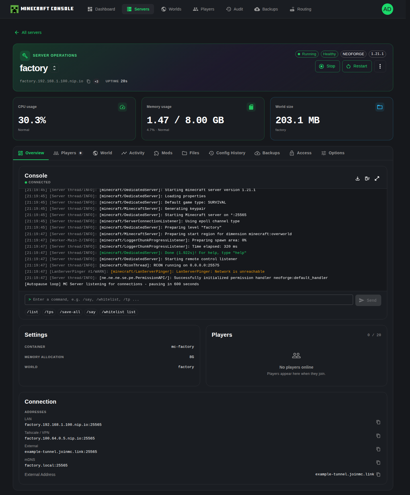
Console¶
The centerpiece of the Overview tab is the Console panel, which provides direct access to the server's live log output and command interface:
- Live Log Stream -- The console displays server log messages in real time, including timestamped entries for server events such as world loading, player connections, and game state changes. Each log line includes the timestamp and log level (e.g.,
INFO) for easy troubleshooting. RCON housekeeping lines are filtered out, and the header shows a Connected / Disconnected indicator for the log stream. - Command Input -- At the bottom of the console, the "Send a command" input field lets you execute any Minecraft server command directly via RCON. Type a command (e.g.,
say Hello!,gamemode creative Player1,time set day) and press Enter to send it to the server. The command output appears in the log stream above. The field is disabled while the log stream is disconnected. - Auto-Scroll -- The console automatically scrolls to show the latest log entries as they arrive. If you scroll up to read older lines, a scroll-to-bottom button appears in the corner.
- Expanded Console -- The expand button in the top-right corner of the console opens a full-screen Console -
<server>dialog with a log level filter (ALL, INFO, WARN, ERROR), Auto-scroll and Hide RCON checkboxes, a clear-logs button, a Reconnect button when disconnected, Quick command buttons (say,give,tp,gamemode), and an Enter command... input with a Send button.
Console Commands
The console supports all standard Minecraft server commands. You do not need to prefix commands with / -- simply type the command name and its arguments directly (e.g., whitelist add Player1).
Server Information¶
The Server Information card below the console displays essential details about the server configuration and runtime status:
| Field | Description |
|---|---|
| Name | The server's display name (e.g., botagent) |
| Container | The Docker container name (e.g., mc-botagent) |
| Hostname | The primary hostname for client connections (e.g., botagent.local) |
| Type | The server platform type (VANILLA, PAPER, FORGE, NEOFORGE, FABRIC, etc.) |
| Version | The Minecraft game version (e.g., 1.21.11) |
| Memory | The allocated JVM memory (e.g., 2G) |
| Uptime | How long the server has been running since its last start |
Players¶
The Players card shows the online / max player count and the names of the players currently connected to the server. When the player list cannot be read, it displays "Player information unavailable".
Connection¶
The Connection card shows how clients can reach the server:
- Addresses -- Every hostname of the server with port
25565and a copy button, labeled by kind: LAN, Tailscale / VPN, nip.io, External (your own domain), or mDNS (.local). LAN addresses are listed first - External Address -- The playit.gg domain assigned to this server (with a copy button), or
Not configured. This row appears when playit.gg is enabled
Copy buttons also work when the console is opened over plain HTTP from another machine, and show a message if copying fails.
Players Tab¶
Available since v2.27.0.
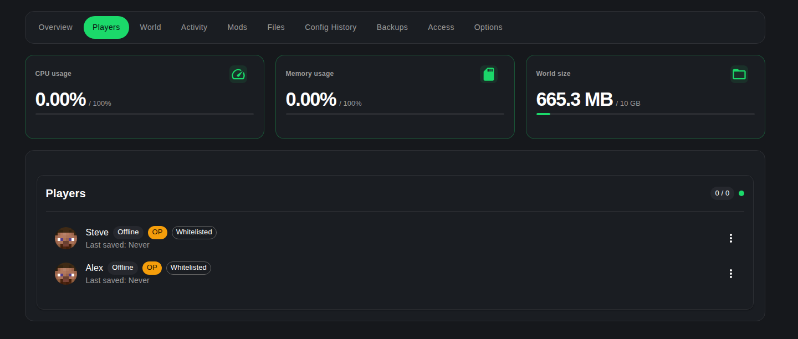
The Players tab lists every player known to the server, not just those currently online. It combines two sources:
- Online players -- queried live via RCON while the server is running
- Known players -- read from the server's files (
usercache.json,playerdata/,ops.json,whitelist.json,banned-players.json)
Because the file-based part does not need RCON, the roster is also shown when the server is stopped (everyone then appears as Offline). The list updates in real time over SSE; the dot next to the online / max counter in the header shows whether the live connection is active.
Each row shows the player's avatar (from mc-heads.net), name, and badges:
| Badge | Meaning |
|---|---|
| Online / Offline | Current connection state |
| OP | Player is a server operator |
| Banned | Player is on the ban list |
| Whitelisted | Player is on the whitelist |
Offline players also show Last saved, the time their player data was last written by the server.
Player Actions¶
Click the ⋮ menu on a row to manage the player. Only the actions that apply to the player's current state are shown:
| Action | Shown when | Notes |
|---|---|---|
| Details | Player has a UUID | Opens the player detail modal (see below) |
| Kick | Player is online | Confirmation dialog with optional reason |
| Ban / Unban | Not banned / banned | Ban asks for a reason (default: Banned by administrator) |
| Make OP / Remove OP | Not OP / OP | Make OP grants permission level 4 |
| Add to Whitelist / Remove from Whitelist | Not whitelisted / whitelisted |
Players tab vs. Players page
The Players tab manages the players of a single server from its detail page. The Player Management page, reached from the top navigation bar, offers the whitelist/ops/ban lists with a server selector.
Player Detail Modal¶
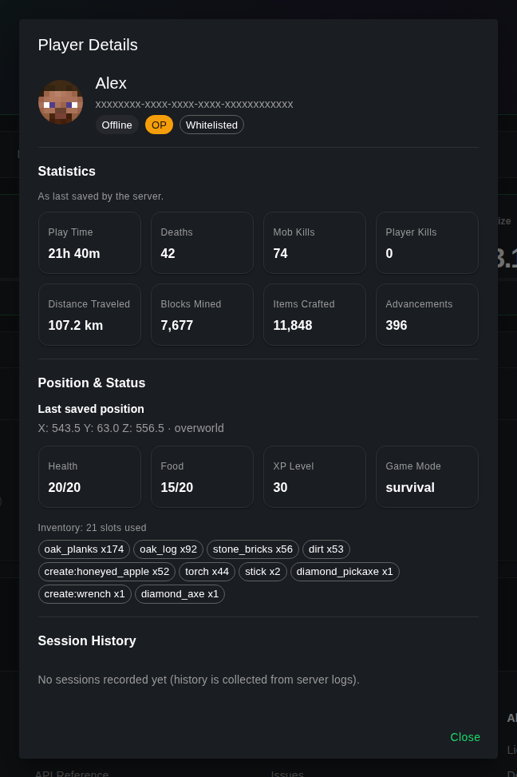
Select Details in the action menu to open the player detail modal. The header shows the avatar, name, UUID, and the same badges as the list. The body has three sections:
Statistics -- values as last saved by the server (from stats/<uuid>.json and advancements/<uuid>.json in the world folder):
| Stat | Description |
|---|---|
| Play Time | Total in-game play time (Xh Ym) |
| Deaths | Number of deaths |
| Mob Kills / Player Kills | Kill counts |
| Distance Traveled | Total distance (m / km) |
| Blocks Mined | Total blocks mined |
| Items Crafted | Total items crafted |
| Advancements | Completed advancements |
If the player has no stats file yet, "No statistics recorded yet." is shown.
Position & Status -- parsed from the player's playerdata/<uuid>.dat:
- Coordinates (X / Y / Z) and dimension
- Health and food (out of 20), XP level, game mode
- Inventory summary: slots used and up to 10 item stacks
While the player is online and the server is running, the position is read live via RCON and labeled Live position with a Live badge. The modal refreshes every 5 seconds while the player is online. Offline players show Last saved position instead.
Session History -- join/leave history collected from server logs:
- Visits, Total Playtime, and Last Seen
- The most recent sessions (up to 20, newest first) with join → leave time and duration; a session that is still open shows Online now
Session history starts when the collector is installed
Session history is not read from the world files. mcctl-api parses each running server's Docker logs (<player> joined/left the game) every 30 seconds and stores the events in data/players.db (SQLite, under the platform root). History therefore only exists from the time mcctl-api v2.27.0+ first runs the collector. On its first pass for a server, the collector backfills at most the last 24 hours of that container's logs; older sessions are not recovered. After that it resumes from a per-server cursor, so a gap (for example, while mcctl-api was stopped) is filled in only if those lines are still in the container's logs — logs of a recreated container are lost. When a server is found stopped, its open sessions are closed at that time.
Until data is collected, the section shows "No sessions recorded yet (history is collected from server logs)."
World Tab¶
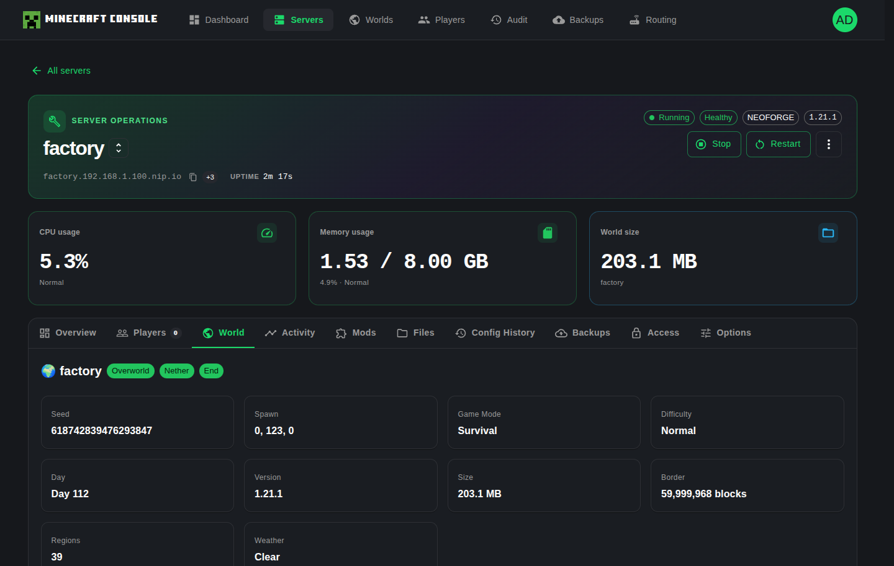
The World tab shows the world assigned to the server. If no world is assigned, it shows "No world is assigned to this server." The same panel opens as World Details when you click a world card on the Worlds page. It contains:
- Header -- The world name with Overworld, Nether, and End chips. A chip is filled when the world contains that dimension
- Info cards -- Seed, Spawn, Game Mode, Difficulty (with "(Hardcore)" when applicable), Day, Version, Size, Border, Regions, and Weather. Click the Seed or Spawn card to copy its value
- Map -- The BlueMap web map (see below)
- Ore & Block Stats -- Block statistics for the whole world (see below)
- Players -- Each known player with an
online/offlinechip, name, coordinates (click to copy), and dimension. Online players use live positions; offline players use the last saved position, and a notice says so when nobody is online
Map¶
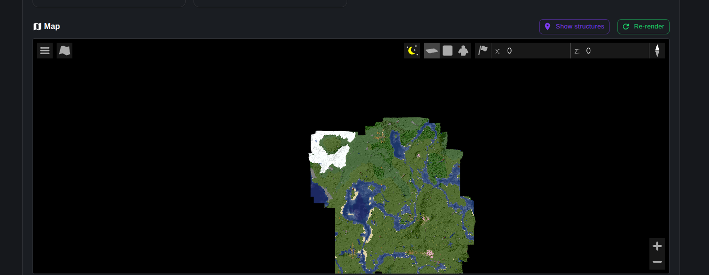
Render map generates a BlueMap web map of the world, and Re-render refreshes it. The render runs in a Docker container limited to 2 GB of memory; the first render also builds the BlueMap image. The map is embedded right below the buttons, with a progress bar while rendering. The map opens on the Overworld by default (Nether and End remain selectable in the viewer). Worlds rendered before v2.29.0 pick this up on Re-render. After a render, Show structures marks structures on the map; you can toggle the structure types in the BlueMap legend.
Ore & Block Stats¶
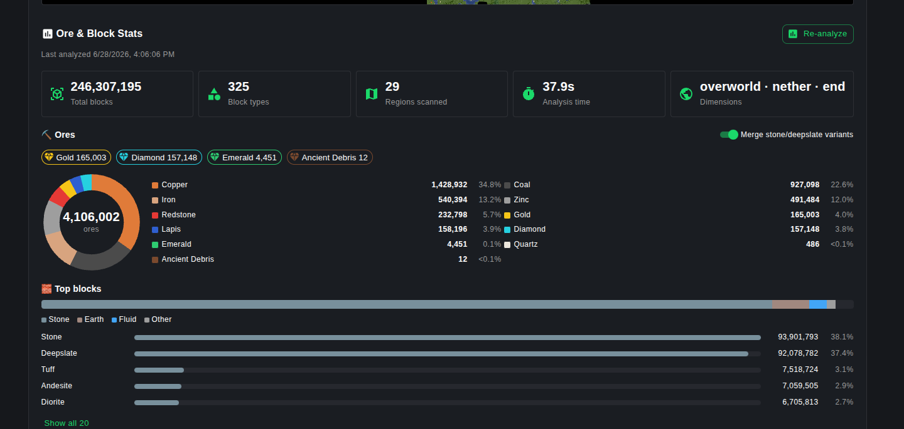
Analyze scans every chunk of the world (it can take minutes on large worlds; progress is shown) and caches the result, and Re-analyze refreshes it. The panel shows when the world was last analyzed, followed by:
- KPI cards: total blocks, block types, regions scanned, analysis time, dimensions
- Ores: a donut chart with a legend (count and share), highlight chips for rare ores (gold, diamond, emerald, ancient debris), and a Merge stone/deepslate variants toggle
- Top blocks: a stacked bar by category (Stone, Earth, Wood, Fluid, Nether, Other) and a top-5 list that Show all expands
Activity Tab¶
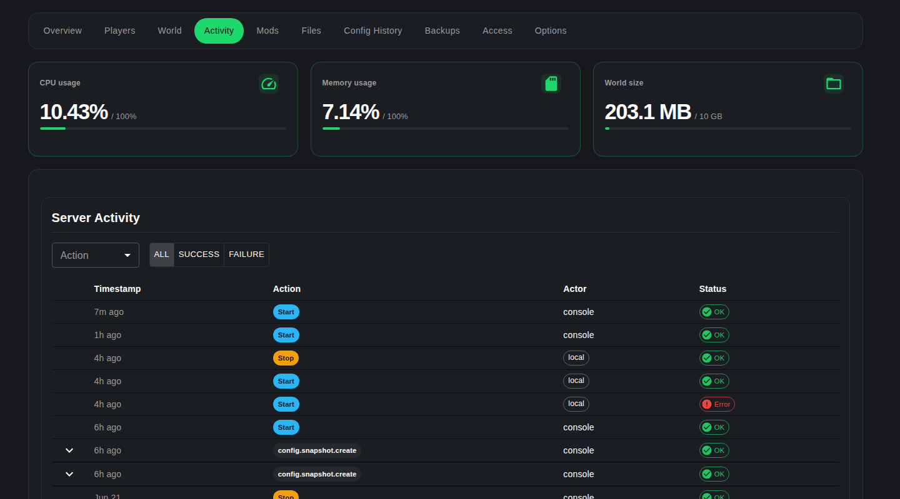
The Activity tab shows the audit history of this server in the same table as the Audit Log page, without the Target column:
- An Action dropdown (All Actions or a specific server action) and a status toggle (ALL, SUCCESS, FAILURE)
- Rows per page of 25 or 50
- A View Full History link that opens the Audit Log page already filtered to this server
Mods Tab¶
The Mods tab provides a complete mod management interface for servers running modded platforms (FORGE, NEOFORGE, FABRIC). This tab allows you to browse, install, and remove mods directly from the Modrinth repository without manual file management.
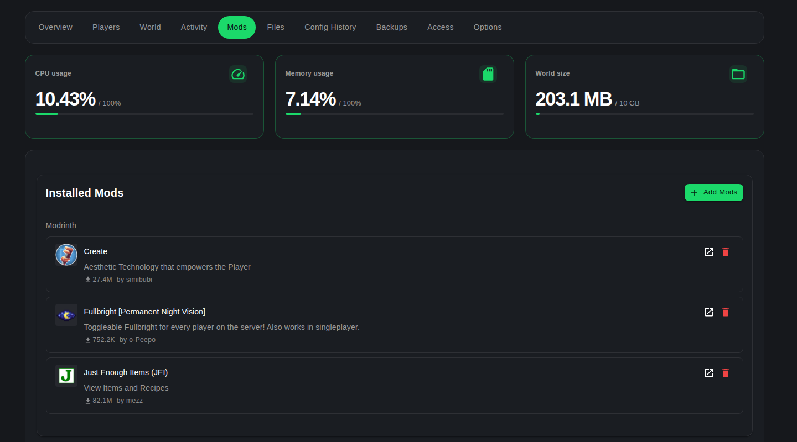
Modded Servers Only
The Mods tab is most useful for modded server types (FORGE, NEOFORGE, FABRIC). While the tab is visible for all servers, mod installation requires a compatible server platform.
Installed Mods¶
The Installed Mods card lists the mods you added, grouped under their source (e.g., Modrinth). Each entry shows:
- Mod icon -- The mod's thumbnail image from Modrinth
- Mod name -- The display name of the mod (e.g.,
Create) - Description -- A brief summary of what the mod does (e.g., "Aesthetic Technology that empowers the Player")
- Download count -- The total number of downloads on Modrinth (e.g.,
12.6M), indicating the mod's popularity - Author -- The mod creator's username (e.g.,
simibubi) - View on Modrinth button (external link icon) -- Opens the mod's page on Modrinth in a new tab for detailed information, changelogs, and documentation
- Remove button (red trash icon) -- Removes the mod from the server's mod list immediately, without a confirmation prompt
When no mods have been added, the card says "No mods installed".
Adding New Mods¶
Click the + Add Mods button in the top-right corner of the Installed Mods card to open the Search Mods dialog:
- Type a mod name or keyword in Search Modrinth... -- results appear as you type
- Review each result's icon, title, description, download count, and author
- Click Add to add the mod. Mods that are already on the server show Installed
Installed Jar Files¶
For servers created from a modpack, the Installed Jar Files (from modpack) card lists every .jar in the mods directory. Use the Included / Excluded switch on a row to exclude a mod from the next install -- handy for client-only mods that crash a dedicated server. Before the modpack is first installed, the card says "No jar files found in the mods directory."
Server Restart Required
After adding or removing mods, or changing the exclude list, you need to restart the server for the changes to take effect. The tab shows a "Restart the server to apply mod changes." notice when a change is made.
Files Tab¶
The Files tab provides a full-featured file manager for your server's file system.
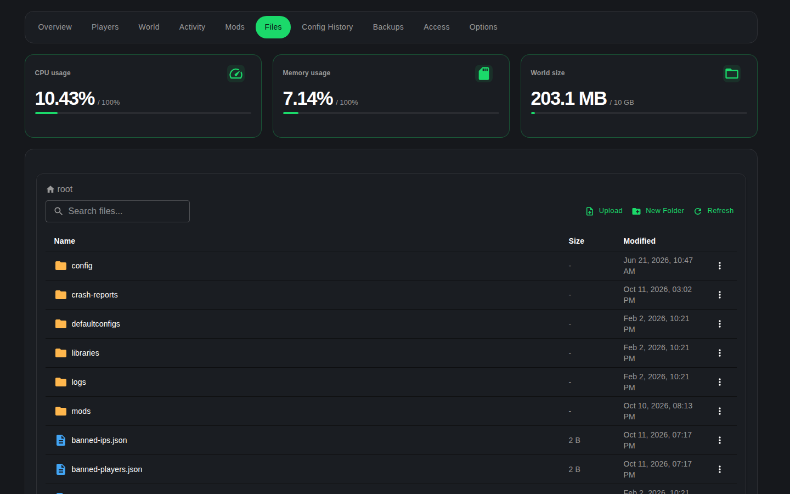
File Browser¶
The file browser displays the contents of the server's data directory in a familiar list layout:
- Breadcrumb navigation at the top shows your current path (e.g.,
root /) and lets you click to jump to parent directories - Search files... box to filter files by name within the current directory
- Each file entry shows the file name, size, and last modified date
- Folders are listed first, followed by files
File Operations¶
The toolbar provides several actions:
| Action | Description |
|---|---|
| Upload | Upload files to the current directory via a drag-and-drop dialog |
| New Folder | Create a new directory in the current path |
| Refresh | Reload the file listing |
The ⋮ menu at the end of each row provides:
- Open -- Open a folder (folders only)
- Edit -- Open an editable file in the editor (text files only)
- Download -- Download the file to your local machine (files only)
- Rename -- Change the file or folder name
- Delete -- Remove the file or folder after a confirmation dialog. For critical files you must type the file name to confirm
Smart File Editors¶
The file manager includes intelligent editors that adapt to the file type:
- server.properties -- Opens a specialized editor with a Form view (categorized, searchable fields) and a Raw view (plain text)
- Player data files (whitelist.json, ops.json, banned-players.json) -- Opens a dedicated player editor with Mojang API integration for username lookup
- Text files (.txt, .md, .json, .yml, .yaml, .properties, .cfg, .conf, .ini, .toml, .xml, .csv, .log, .sh, .bat) -- Opens a code editor with syntax awareness
- Other files -- Available for download only
Editing server.properties
The server.properties editor changes the file of the running server directly. Those edits do not survive recreating the server container. For persistent settings, use the Options tab.
Config History Tab¶
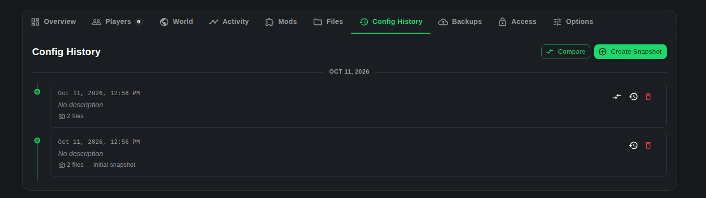
The Config History tab keeps a timeline of configuration snapshots for this server. A snapshot captures the server's configuration files (server.properties, config.env, etc.), so you can compare versions and roll back. The same snapshots are also available on the Backups page.
- Create Snapshot -- Save the current configuration. Add an optional description such as "Before modpack update"
- Timeline -- Snapshots are listed newest first and grouped by date. Each entry shows its time, a Scheduled chip if a schedule created it, its description (or "No description"), and its file count
- View diff -- Compares a snapshot with the previous one
- Restore -- Rolls the configuration back to that snapshot
- Delete -- Click the trash button, then click Confirm within three seconds
- Compare -- Appears once there are two or more snapshots. In compare mode, select any two snapshots and click View Diff
- Load More -- Loads older snapshots when the list is long
The Config Diff dialog shows Snapshot A vs. Snapshot B with a file tree on the left, a Unified / Split view switch, and a summary of modified, added, and deleted files. In this tab it also offers Restore to Snapshot A.
The Restore Configuration dialog lists the changes that will be applied and keeps Create safety snapshot before restoring (recommended) checked by default. If the server is running, it warns that a restart may be required for the changes to take effect.
Backups Tab¶
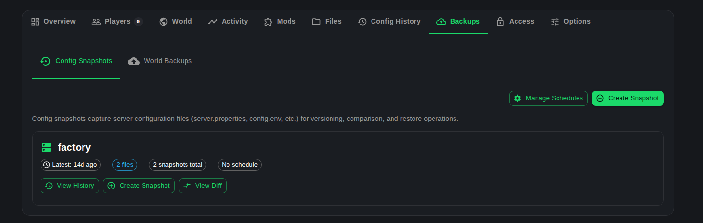
The Backups tab of a server has two sub-tabs:
- Config Snapshots (default) -- The snapshot summary card for this server (latest snapshot, file count, total snapshots, schedule status) with View History, Create Snapshot, and View Diff buttons. Manage Schedules opens the schedule panel described under Config Snapshots
- World Backups -- The platform-wide world backup view: Push Backup, backup status, backup schedules, and backup history, exactly as on the Backups page
Access Tab¶
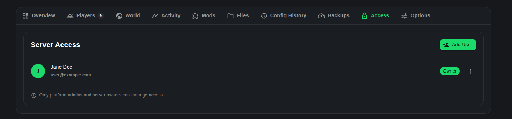
The Access tab controls which users can work with this server. Each row shows the user's avatar, name, email, and a permission badge:
| Permission | Meaning (as described in the grant dialog) |
|---|---|
| Viewer | Can view server status and logs |
| Operator | Can start, stop, and configure the server |
| Owner | Full control including managing other users |
- Add User opens the Add User Access dialog. Search by name or email (type at least 2 characters), choose a Permission Level, and click Add User
- The ⋮ menu on a row offers Change to Owner, Change to Operator, Change to Viewer, and Remove Access. The last Owner of a server cannot be demoted or removed
- Only platform admins and server Owners can manage access. Platform admins can see every server; other users see only the servers they have been granted
Options Tab¶
The Options tab provides a comprehensive configuration editor for your server.
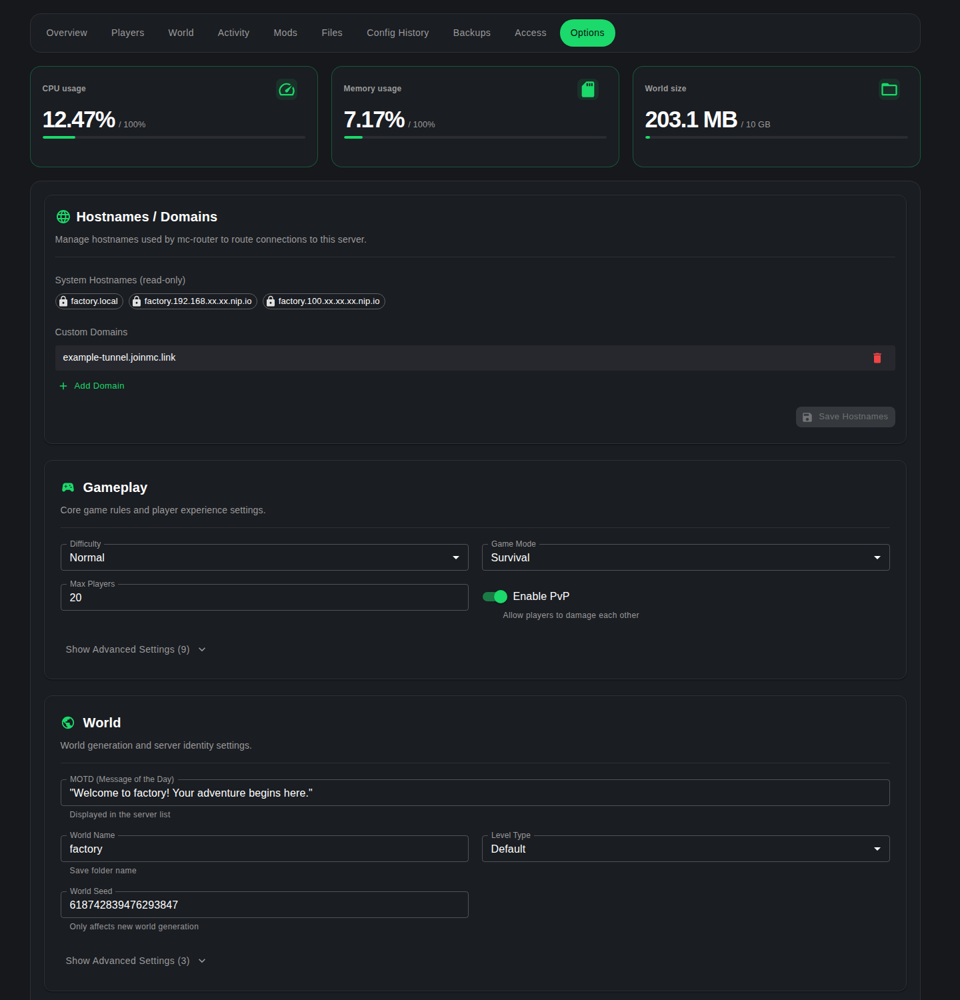
Hostnames / Domains¶
At the top of the Options tab, the Hostnames / Domains card shows all the hostnames configured for routing connections to this server:
- System Hostnames (read-only) -- Automatically generated hostnames (e.g.,
botagent.local,botagent.192.168.xx.xx.nip.io) - Custom Domains -- User-defined custom domain names, each with a remove button
- + Add Domain button to enter an additional custom hostname. Domains ending in
.localor.nip.ioare reserved for system hostnames - A Save Hostnames button to store the list. Hostname changes only take effect after the server container is recreated -- run
docker compose up -dor restart the server from the web console
Settings Sections¶
Below the hostnames, the settings are grouped into cards. Each card shows its essential fields first; a Show Advanced Settings (N) toggle at the bottom of the card reveals its additional fields:
| Section | Essential fields |
|---|---|
| Gameplay | Difficulty (Peaceful, Easy, Normal, Hard), Game Mode (Survival, Creative, Adventure, Spectator), Max Players, Enable PvP |
| World | MOTD (Message of the Day), World Name, Level Type (Default, Flat, Large Biomes, Amplified, Buffet), World Seed |
| Security | Online Mode (Mojang Auth), Enable Whitelist |
| Performance & JVM | Memory, Aikar's Flags, View Distance |
| Auto-pause / Auto-stop | Enable Auto-pause, Pause Timeout |
| System | Timezone, Resource Pack URL, Enable RCON |
| Remote Access | Enable WebSocket Console, Enable SSH Console |
| Configuration Repositories | Git repository URLs for server.properties and for the Paper, Pufferfish, and Purpur configs (applied at startup) |
Advanced fields include, for example, Hardcore, Allow Flight, and Spawn Protection in Gameplay; Simulation Distance, Initial Heap, Max Heap, and JVM -XX Options in Performance & JVM; Enable Auto-stop in Auto-pause / Auto-stop; and RCON Password, RCON Port, UID, and GID in System.
Save and Restart¶
When you modify settings:
- A sticky action bar appears at the bottom of the page showing "N unsaved changes" (and, if needed, which fields require a restart)
- Click Save Changes (N) to apply the changes
- If the server is running and any changed setting requires a restart (e.g., memory, online mode, world settings), a Restart Required dialog appears with Save Only, Save & Restart, and Cancel
- Click Discard to drop unsaved changes
Restart Required
Some settings (like memory allocation, online mode, and world seed) require a server restart to take effect. The UI clearly indicates which settings need a restart after being changed.
Danger Zone¶
At the bottom of the Options tab, the Danger Zone card contains Reset World, which permanently deletes the current world and generates a new one. The button is disabled while the server is running ("Stop the server first"), and the confirmation dialog requires you to type RESET. This action cannot be undone.
Player Management¶
The Players page provides comprehensive management of players across all your servers.
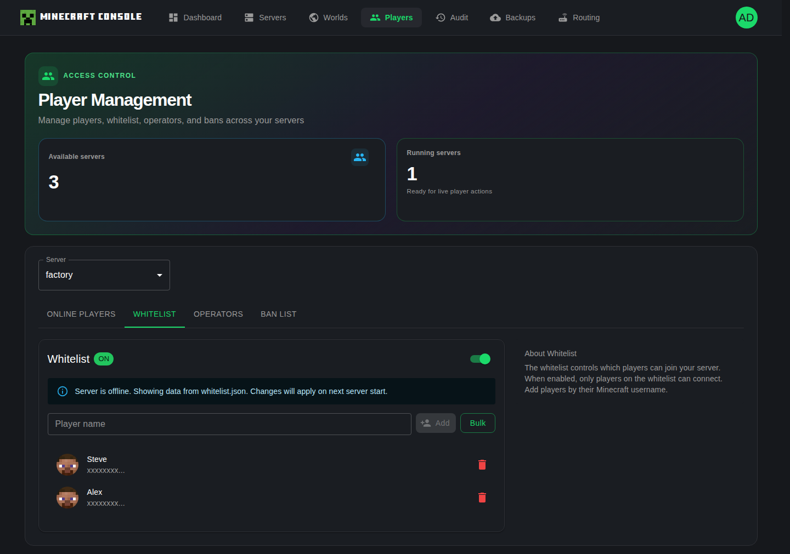
Server Selector¶
At the top of the page, a Server dropdown lets you select which server to manage. The selected server determines which data is displayed in the Whitelist, Operators, and Ban List tabs below. Two cards above it show the number of available and running servers.
Tabs¶
The Player Management page is organized into four tabs:
Online Players¶
Lists the players currently connected, grouped by server, with a Kick action (optional reason). This tab covers all servers and does not depend on the Server dropdown. Use the refresh button to reload the list.
Whitelist¶
Manage which players are allowed to join your server:
- Whitelist toggle -- Enable or disable the whitelist (shown as an ON/OFF switch)
- Player input field -- Enter a Minecraft username to add to the whitelist
- Add button -- Add a single player
- Bulk button -- Switch to a multi-line input (
player1, player2, player3) and add several players at once with Add All - Player list -- Shows all whitelisted players with their Minecraft avatar and a remove button. A search box appears once the list has five or more players
Offline Server Data
When a server is offline, the Players page reads data directly from the server's files (whitelist.json, ops.json, banned-players.json). An informational banner indicates: "Server is offline. Showing data from whitelist.json. Changes will apply on next server start."
Operators¶
Manage players with operator (admin) privileges:
- Add players as operators with configurable permission levels (1-4)
- Level 1: Can bypass spawn protection
- Level 2: Can use /clear, /gamemode, etc.
- Level 3: Can use /ban, /kick, /op, etc.
- Level 4: Can use /stop, full access
An information panel on the right explains each OP level in detail.
Ban List¶
Manage banned players:
- Ban players by username with an optional reason
- View all currently banned players
- Pardon (unban) players with a single click
- An information panel explains how bans work
Worlds¶
The Worlds page lets you manage all Minecraft worlds stored in your platform.
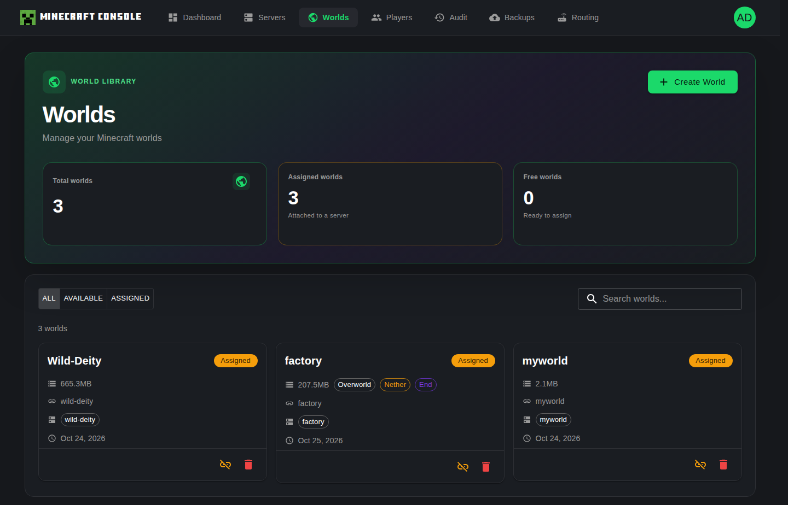
World List¶
The page header shows the + Create World button and three cards: Total worlds, Assigned worlds, and Free worlds. Worlds are displayed as cards in a grid layout. Each world card shows:
- World name (e.g.,
Wild-Deity,botagent,factory) - Status badge --
Available(green) for unassigned worlds,Assignedfor worlds currently assigned to a server. A red Assigned to N servers chip appears when an older install has several servers on the same world - Size -- Disk space used by the world (e.g.,
610.2MB,20.5MB), plus Overworld / Nether / End chips when the world has more than one dimension - Servers -- The servers using the world, or "No servers". An assigned world also shows which server it is assigned to
- Date -- When the world was last modified
- Action buttons:
- Assign (link icon) -- Assign an available world to a server
- Release (unlink icon) -- Switch the server using the world back to its own default world (the world is kept in
worlds/) - Delete (red trash can icon) -- Delete the world
Click the body of a card to open World Details, which shows the same panel as the server World tab (info cards, map, ore & block stats, and player locations).
Filtering and Search¶
At the top of the list:
- ALL -- Show all worlds
- AVAILABLE -- Show only available (unassigned) worlds
- ASSIGNED -- Show only worlds currently assigned to a server
A Search worlds... box lets you filter worlds by name.
Assignment Warnings¶
If an older install has two servers on the same world, or a server's config.env cannot be read, a warning alert at the top of the page lists each problem. Nothing is fixed automatically: assign another world to all but one of the servers. Until a server's config.env is fixed, assigning, releasing and deleting worlds are refused.
Creating a New World¶
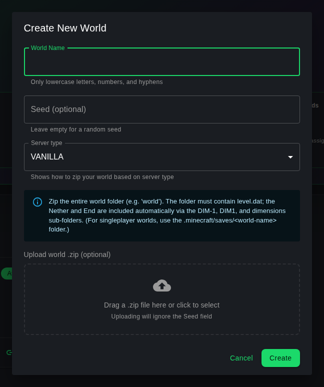
Click + Create World in the page header to open the Create New World dialog:
- Enter a World Name (lowercase letters, numbers, and hyphens)
- Optionally specify a Seed (leave it empty for a random seed)
- Click Create
To bring in an existing world instead, drop a .zip file on the Upload world .zip (optional) area (or click it to choose a file). The Seed field disappears and the button changes to Import. The Server type dropdown does not affect the result; it only changes the on-screen guidance for how to zip the world:
- VANILLA, FORGE, NEOFORGE, FABRIC, QUILT -- Zip the world folder (it must contain
level.dat; the Nether and End are inside it). Some modpacks store them as<world-name>_netherand<world-name>_the_end; if so, zip all three folders together - PAPER, SPIGOT, BUKKIT -- Zip
<world-name>,<world-name>_nether, and<world-name>_the_endtogether; leaving one out loses that dimension
Assigning a World to a Server¶
Click the Assign (link) icon on an available world card to open the Assign World dialog. Select a server in Select Server; stopped servers are listed under Available Servers. Running servers appear under Running Servers (stop them first) and cannot be selected. Click Assign. The server's LEVEL is set to the world and the card is marked Assigned.
A world can be used by one server only, and the server must be stopped. To switch a server back to its own default world, click the Release icon on the assigned world's card; the server must be stopped for this too.
Deleting a World¶
Click the red trash can icon on a world card. A Delete World dialog appears requiring you to type the exact world name to prevent accidental deletion. This action is irreversible. A world that a server uses cannot be deleted: assign another world to that server first.
Data Loss
Deleting a world permanently removes all world data including terrain, player builds, and entities. Always create a backup before deleting a world.
Backups¶
The Backups page manages world backups, automated backup schedules, and server configuration snapshots. A chip in the header shows whether backups are Configured.
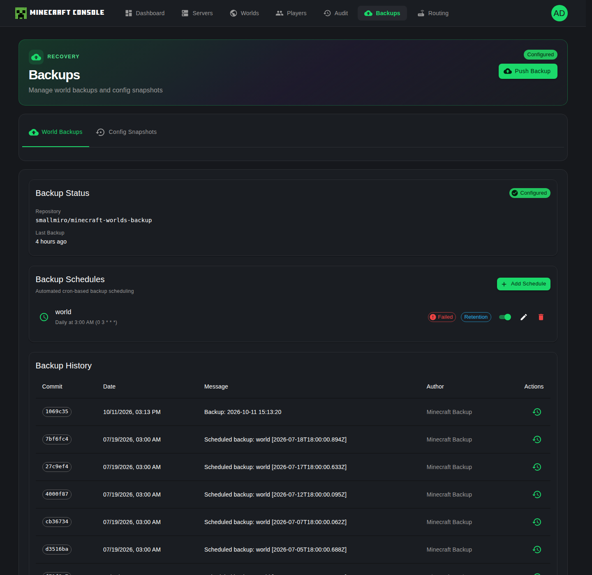
The page has two tabs: World Backups (default) and Config Snapshots. The selected tab is kept in the URL (/backups?tab=config-snapshots).
World Backups¶
Backup Status¶
The Backup Status card shows the current backup configuration:
- Status -- Whether the backup system is
Configured(green checkmark) orNot Configured. When it is not configured, the card asks you to setBACKUP_GITHUB_REPOandBACKUP_GITHUB_TOKEN - Repository -- The configured Git repository for backup storage (e.g.,
smallmiro/minecraft-worlds-backup) - Last Backup -- When the last backup ran (e.g., "5 minutes ago"), or "No backups yet"
Push Backup¶
The Push Backup button in the page header triggers an immediate manual backup of all worlds to the configured Git repository. A dialog lets you enter an optional Commit Message, then click Push.
Backup Schedules¶
The Backup Schedules card manages automated cron-based backup scheduling:
- Each schedule shows its name, a human-readable frequency (e.g., "Every hour"), and the cron expression
- A last-run chip (OK or Failed) -- hover for the time and message
- Retention badge -- indicates whether backup retention policies (maximum count or age) are configured
- Toggle switch -- Enable or disable individual schedules
- Edit button (pencil icon) -- Modify the schedule
- Delete button (trash icon) -- Remove the schedule
- + Add Schedule button to create new automated backup schedules (name, frequency preset or custom cron expression, maximum backup count, and maximum age in days)
Backup History¶
The Backup History card (visible when the backup system is configured) lists past backups with the commit hash, date, message, and author. The restore button on a row opens Restore Backup, which warns that all worlds will be restored from the selected backup and that current world data will be overwritten.
Config Snapshots¶
The Config Snapshots tab manages configuration snapshots for every server at once. It lists one card per server with:
- The latest snapshot ("Latest: 2h ago"), its file count, and the total number of snapshots (or "No snapshots yet")
- A schedule chip: Schedule: Active, Schedule: Paused, or No schedule
- View History (needs at least two snapshots), Create Snapshot, and View Diff (shown when the server has two or more snapshots; compares the latest two)
The header has two buttons:
- Create Snapshot -- Opens Create Config Snapshot. Choose the Server, optionally add a description (e.g., "Before modpack update"), and click Create Snapshot
- Manage Schedules -- Opens the Config Snapshot Schedules panel. Click Add Schedule and fill in Server, Schedule Name, Cron Preset (Every hour, Every 6 hours, Daily at midnight, Daily at 3 AM, Weekly, or Custom) or a Cron Expression, and Retention Count (the maximum number of scheduled snapshots kept per server). Existing schedules can be enabled or disabled with a switch, edited, or deleted
To work with a single server's snapshot timeline -- compare, restore, delete -- use the server's Config History tab.
Audit Log¶
The Audit Log page provides a comprehensive activity log for all management operations performed across your servers.
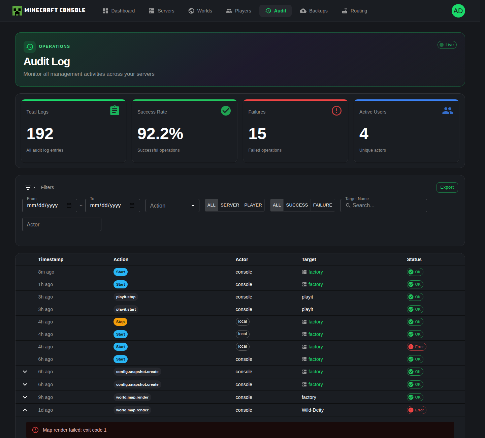
Live Monitoring¶
The Audit Log features a Live indicator in the page header showing the real-time SSE connection status:
- Green dot with "Live" -- Connected and receiving real-time events
- Gray dot with "Disconnected" -- SSE connection lost (auto-reconnects)
When new audit events arrive while you are viewing the page, a notification banner appears: "X new logs available - Click to refresh."
Statistics Overview¶
Four statistics cards at the top provide summary metrics:
| Card | Description |
|---|---|
| Total Logs | Total number of audit log entries |
| Success Rate | Percentage of successful operations |
| Failures | Count of failed operations |
| Active Users | Number of unique actors who performed actions |
Filters¶
The Filters panel can be collapsed, shows how many filters are active, and has a Clear All button. It provides:
- From / To -- Filter by start and end dates
- Action -- Filter by a specific action type (e.g.,
server.start,server.stop,backup.schedule.create). The list narrows to server or player actions when a target type is selected - Target type -- Filter by target category: ALL, SERVER, PLAYER
- Status -- ALL, SUCCESS, FAILURE
- Target Name -- Search by the name of the server, world, or player
- Actor -- Search by the name of the user who performed the action (e.g.,
api:admin) - Export button -- Export the filtered audit data
Log Table¶
The main table displays audit entries with the following columns:
| Column | Description |
|---|---|
| Timestamp | When the action was performed (relative time like "21m ago"; hover for the exact time) |
| Action | The action type with a color-coded badge |
| Actor | Who performed the action (username) |
| Target | The server or player affected (links to that server or the Players page) |
| Status | Success (green) or Failure (red) indicator |
Use the arrow at the start of a row to expand its details; failed entries start expanded and show the error message. Click on any row to open the Audit Log Detail drawer with the entry ID, timestamp, action, status, actor, target, error message, and the action's details, plus Related Logs (Same Target and Same Actor).
Export¶
Click the Export button to open the Export Audit Logs dialog. Choose CSV or JSON, review the applied filters and the estimated number of rows, then download the file. Exports are limited to 5,000 rows; narrow the filters if you need more.
Routing¶
The Routing page gives you full visibility and control over your network routing configuration. The header shows the router status and the number of routes.
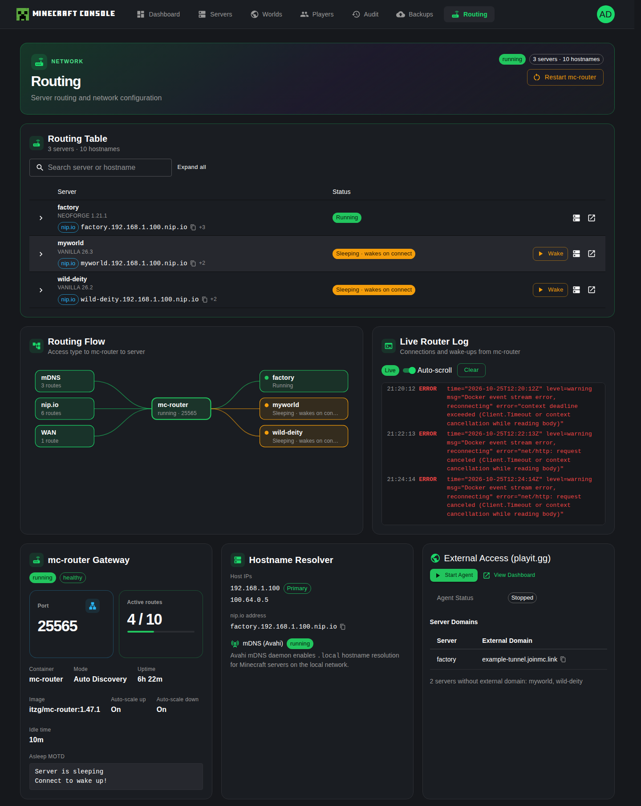
MC-Router Status¶
The wide panel on the left shows the MC-Router Status with a live routing table:
- Router status and health chips (e.g.,
running,healthy) - The Routing Table has one row per server. A collapsed row shows:
- The server name, its type and Minecraft version, and its status (e.g. Sleeping · wakes on connect)
- The primary address (nip.io first, then mDNS, WAN, Custom) with a copy button, and how many more hostnames there are
- The hostname types (e.g.
nip.io ×2,mDNS,WAN) and an N not routed warning when mc-router does not know some of them - Wake/Start, Edit hostnames and Open server
- Click a row (or its arrow) to list all of that server's hostnames, each with a copy button, its type and a Not routed warning if needed. Several servers can be open at once; Expand all / Collapse all opens or closes every server.
- The search box matches server names and hostnames. When a hostname matches, its server opens and the matching hostname is highlighted.
Platform Information¶
The Platform Information card shows details about your mc-router setup:
| Field | Description |
|---|---|
| Router Name | The mc-router container name |
| Port | The listening port (default: 25565) |
| Mode | Routing mode (e.g., Auto Discovery) |
| Uptime | How long the router has been running |
Network Settings¶
The Network Settings card displays:
- Listening Port -- The port mc-router listens on
- Routing Mode -- How hostnames are resolved (e.g.,
Auto Discovery) - Total Routes -- Number of routing entries
- Active Routes -- Routes whose server is running, shown as "x / y"
mDNS (Avahi) Status¶
The mDNS (Avahi) card shows whether the Avahi mDNS daemon is active, enabling .local hostname resolution for Minecraft clients on the local network.
External Access (playit.gg)¶
The External Access (playit.gg) card manages playit.gg tunnel configuration for making your servers accessible from the internet without port forwarding:
- Start Agent / Stop Agent buttons for managing the playit agent, and a View Dashboard link to the playit.gg tunnels page
- Agent Status -- Running or Stopped, with the agent uptime
- Server Domains table showing which servers have external domains configured (e.g.,
possible-tracks.gl.joinmc.link), each with a copy button - A list of servers without external domains
If playit.gg is not set up, the card shows "Not configured" and asks you to set PLAYIT_SECRET_KEY.
Navigation¶
The top navigation bar is consistent across all pages and includes:
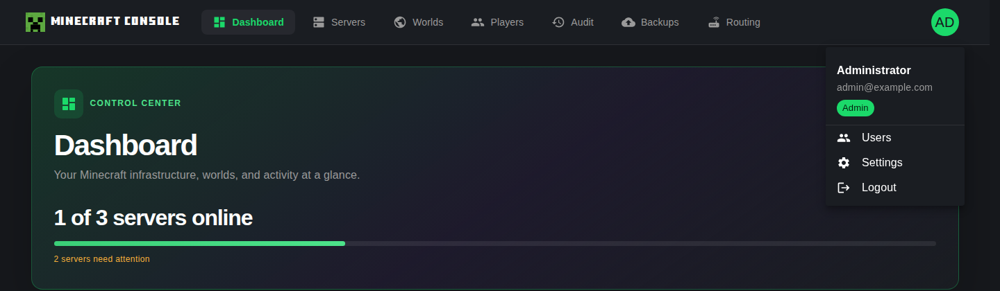
| Item | Description |
|---|---|
| Minecraft Console logo | Click to return to the Dashboard |
| Dashboard | Infrastructure overview |
| Servers | Server management |
| Worlds | World management |
| Players | Player management |
| Audit | Activity audit logs |
| Backups | Backup management |
| Routing | Network routing configuration |
| User avatar (top-right) | Opens the user menu |
The currently active page is highlighted in the navigation bar.
The user menu shows your name and email (with an Admin chip for administrators) and offers:
| Menu item | Description |
|---|---|
| Users | User Management -- administrators only |
| Settings | Account Settings |
| Logout | End the session and return to the sign-in page |
The console always uses its dark theme; there is no theme toggle.
Account Settings¶
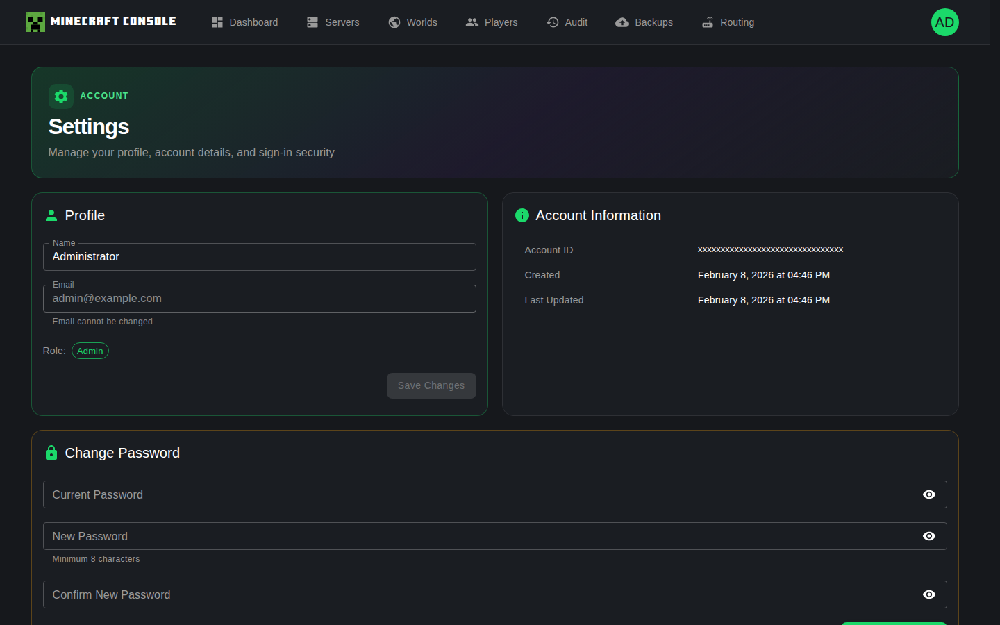
Open Settings from the user menu to manage your own account. The page has three cards:
- Profile -- Edit your Name and click Save Changes. The Email is read-only ("Email cannot be changed"), and the Role (Admin or User) is shown for reference
- Account Information -- Your Account ID, Created time, and Last Updated time
- Change Password -- Enter your Current Password, a New Password (at least 8 characters, different from the current one), and Confirm New Password, then click Change Password. Other signed-in sessions are not signed out
Platform Settings (Admin)¶
Administrators see an additional Platform Settings section on the Settings page, above the account cards. It edits the platform .env file. Non-admin users only see their own account cards and cannot read or change platform configuration; the API enforces this independently of the UI.
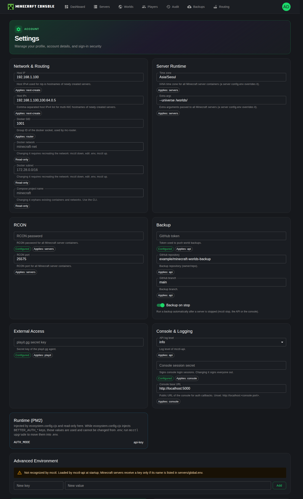
- Bento cards -- Settings are grouped into cards: Network & Routing, Server Runtime, RCON, Backup, External Access (playit.gg) and Console & Logging. Each field uses a typed control (text, switch, select, number, IP list) with field-level validation
- Secrets are write-only -- Secret fields (
RCON_PASSWORD,BACKUP_GITHUB_TOKEN,PLAYIT_SECRET_KEY) show Configured or Not configured. The input is never pre-filled; typing a value marks the field changed - Runtime (PM2) -- A read-only card shows
AUTH_MODEfromecosystem.config.cjs, plusBETTER_AUTH_BASE_URL/BETTER_AUTH_SECRET(configured only) while an older ecosystem file still injects them. While the ecosystem defines them they win over.envand cannot be changed here; runmcctl upgradeto move them to.env - Advanced Environment -- Unknown keys as key/value rows (add, edit, remove). Servers receive one only if its name is listed in
servers/global.env - Legacy / Unused -- Legacy keys with warning styling ("Not read by any current code."). Nothing is removed unless you remove it explicitly
- Read-only network identity --
MINECRAFT_NETWORK,MINECRAFT_SUBNETandCOMPOSE_PROJECT_NAMEare displayed with CLI guidance only
Server-specific values stay in each server's Options tab. A server's config.env overrides the platform value for that server, and the UI notes this on server-runtime keys. See Environment Variables for the full classification.
Saving and Applying Changes¶
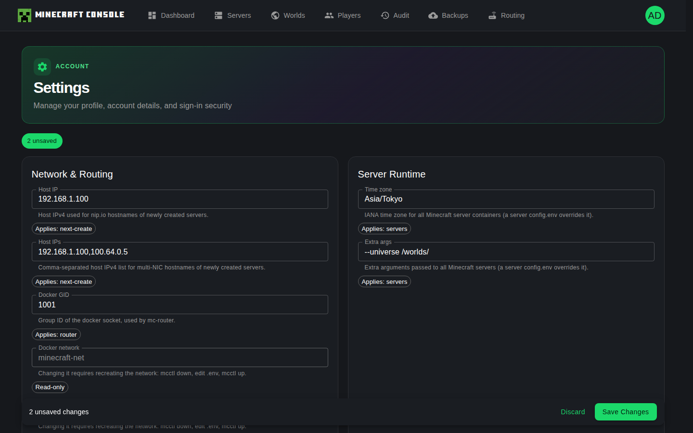
A sticky bar with Discard and Save Changes appears when any field is changed, and a chip above the cards counts the unsaved fields. Saving only writes .env; it never restarts anything. After saving, a Restart required dialog lists what needs to be restarted, per scope:
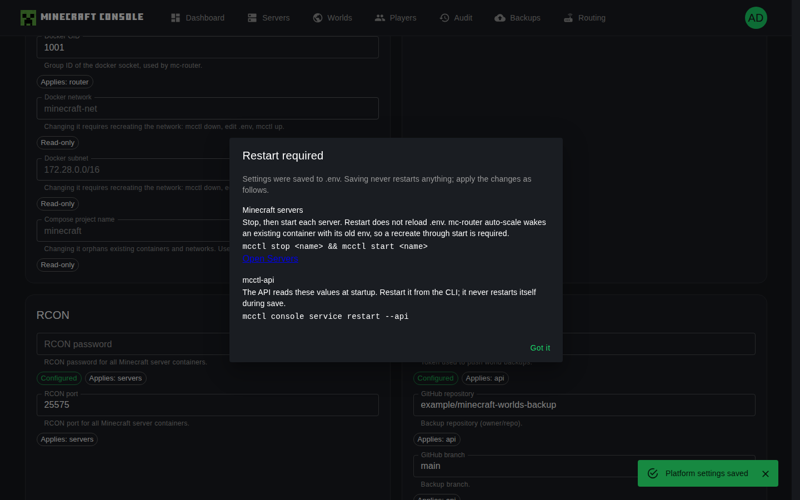
| Scope | What to do |
|---|---|
| Servers | Stop, then start each server (Servers page, or mcctl stop <name> && mcctl start <name>). Restart does not reload .env. mc-router auto-scale wakes an existing container with its old environment, so a recreate through start is required |
| Router | mcctl router start (not restart) |
| playit | Stop, then start the playit agent on the Routing page, or mcctl playit stop && mcctl playit start |
| API | mcctl console service restart --api. Settings backed by mcctl-api show a "restart pending" chip until it restarts |
| Next create | Applies to servers created after this change. Existing server hostnames are unchanged |
If the file changed since you loaded the page (for example via the CLI), saving returns a 409 conflict and a dialog asks you to reload. Your edits are never overwritten automatically.
CLI Equivalents¶
| Card | CLI |
|---|---|
| Network & Routing | mcctl init --reconfigure |
| Backup | mcctl backup init |
| External Access (playit.gg) | mcctl playit setup |
| Runtime (PM2) | mcctl console init |
User Management (Admin)¶
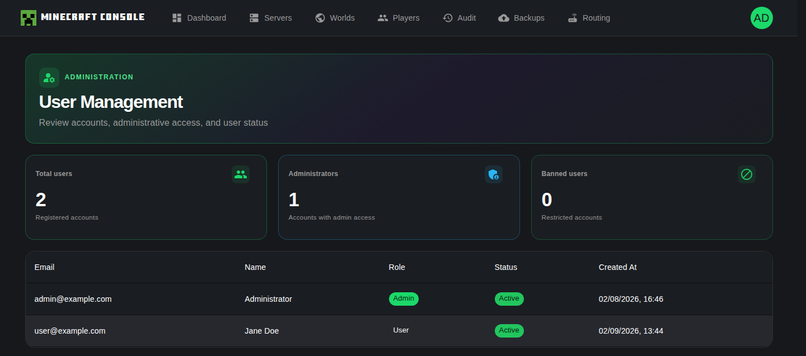
Administrators see a Users item in the user menu that opens the User Management page (/admin/users). Other users who open this page are redirected to the Dashboard.
- Three cards summarize Total users, Administrators, and Banned users
- The user directory lists each account's Email, Name, Role (Admin or User), Status (Active or Banned), and Created At
- Click a row to open User Details with the same fields plus the User ID
The page is read-only. To add users, change roles, or reset passwords, use the CLI (see CLI Commands):
mcctl console user add user@example.com --role user --password "SecurePass123"
mcctl console user update user@example.com --role admin
mcctl console user reset-password user@example.com
Best Practices¶
Security¶
- Use Strong Passwords -- Follow the password requirements during
mcctl console init - Limit Access -- Use the Access tab to grant minimal permissions to each user
- Use HTTPS -- Configure a reverse proxy with SSL for production deployments
- Review Audit Logs -- Regularly check the Audit Log for unexpected activity
Server Management¶
- Monitor the Dashboard -- Check server health, player counts, and recent activity regularly
- Graceful Shutdowns -- Always use the Stop button instead of force-killing containers
- Backup Before Changes -- Push a backup before modifying world data, and create a config snapshot before changing server configuration
- Use Scheduled Backups -- Configure automated backup schedules for peace of mind
Performance¶
- Avoid Simultaneous Operations -- Don't start/stop multiple servers at once
- Monitor Resource Usage -- Use the resource stat cards on the server detail page to track CPU and memory
- Clean Up Unused Worlds -- Delete worlds that are no longer needed to free disk space
Usage Analytics¶
In production mode, the web console sends anonymous usage data to Google Analytics 4 (GA4) so we can see which screens are used. Development mode (pnpm dev) never sends anything.
What is sent:
- An anonymous
installId(random UUID), one per installation, sent as the GAuser_id. It is unrelated to your accounts or hostnames. - The normalized page path, such as
/dashboard,/servers/:name, or/servers/:name/console - The mcctl console version (
mcctl_version)
What is not sent:
- The console's hostname or IP address (the page URL is rewritten to
http://mcctl-console.invalid/...before sending) - Server names, world names, or query strings
- Accounts or email addresses
Note
Your browser sends the request to Google, so Google receives the connecting IP address. According to Google's documentation, GA4 does not log or store IP addresses.
The installId¶
The installId is stored as installId in <root>/.mcctl.json. It is created once and never changes:
- New installation: created by
mcctl init - Upgrade:
mcctl upgradeadds it only if it is missing (an existing value is kept) - Package-only update with
mcctl update: created and saved on the console's first request
mcctl console init and mcctl update print this notice when analytics is on:
Console usage analytics is on (anonymous install ID and page paths, sent to Google Analytics). To turn it off, set "telemetry": false in <root>/.mcctl.json.
Turning It Off¶
Troubleshooting¶
Can't Access the Console¶
-
Check Service Status:
-
Verify Port:
-
Check Logs:
Login Fails¶
-
Verify Credentials: Sign in with the email shown in the Email column:
-
Reset Password: The sign-in page has no self-service reset, so use the CLI with the account's email:
Server Status Not Updating¶
-
Check API Health:
-
Verify Docker Socket: Ensure Docker is running and the mcctl-api process has access to the Docker socket.
-
Check Network: Ensure mcctl-console can reach mcctl-api on port 5001.
Commands Not Working¶
- Server Must Be Running -- RCON commands only work when the server is in a
runningstate - RCON Must Be Enabled -- Ensure RCON is enabled in the server configuration
- Check API Logs:
Mobile Access¶
The web console uses a responsive Material UI layout that adapts to different screen sizes:
- Phone -- Simplified card layout with collapsible navigation
- Tablet -- Full dashboard with optimized touch controls
- Desktop -- Full feature set with side-by-side panels
Mobile Tips
- Use landscape mode for better command input in the console
- The navigation collapses into a hamburger menu on small screens
- Most dialogs are full-screen on mobile for easier interaction